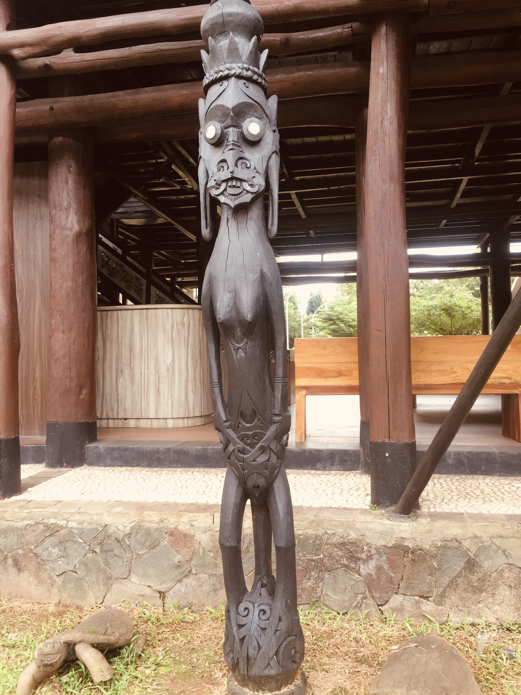
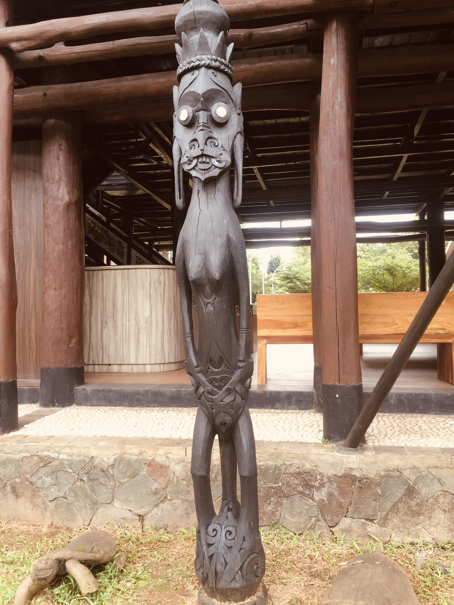

Anjungan Kalimatan Timur
Sejarah & Makna Anjungan Kalimantan Timur
Setelah puas mengagumi Rumah Bubungan Tinggi, kami pun melangkah ke sebelah untuk mengunjungi Anjungan Kalimantan Timur. Pemandangan yang menyambut benar-benar menakjubkan! Rumah Lamin berdiri megah dengan panjang hingga 300 meter—setara tiga kali lapangan sepak bola. Rumah ini bukan sekadar tempat tinggal, melainkan simbol kebersamaan suku Dayak Kenyah: puluhan keluarga hidup bersama dalam satu bangunan besar, mengedepankan filosofi gotong royong dan kekuatan komunitas.
Pada awal berdirinya, museum ini bertujuan mengedukasi masyarakat tentang pentingnya peran pemadam kebakaran. Koleksi menarik seperti mobil pemadam tua, helm klasik, dan prasasti Brandweer Batavia 1929 menjadi saksi sejarah perkembangan pemadam kebakaran di Indonesia.
Di era media sosial yang sering membuat kita terpisah meski "terhubung", Rumah Lamin mengingatkan arti kebersamaan sejati. Bukan sekadar berbagi foto, tapi benar-benar hadir untuk keluarga dan sahabat. Pengunjung dari berbagai daerah pun terinspirasi—ada keluarga yang ingin mengenalkan gotong royong pada anak-anaknya, dan mahasiswa yang menjadikan arsitektur tradisional ini sebagai inspirasi desain komunitas modern.
TMII menjadi tempat penting untuk melestarikan warisan budaya Indonesia. Di tengah modernisasi, anjungan seperti ini mengingatkan kita akan identitas dan asal-usul bangsa. Pulang dari Rumah Lamin, hati penuh refleksi: mungkin kita tak bisa hidup persis seperti masyarakat Dayak dulu, tapi nilai-nilai kebersamaan, musyawarah, dan hormat pada alam tetap relevan untuk kehidupan yang lebih bermakna.


 



Sorotan Budaya & Koleksi Anjungan Kalimantan Timur
1. Titik Kontrol Geodesi 0IKN
Titik kontrol geodesi yang dipasang oleh Badan Informasi Geospasial (BIG) sebagai referensi pemetaan dan pembangunan Ibu Kota Nusantara (IKN). Titik ini menjadi dasar koordinat pembangunan infrastruktur dan simbol babak baru Indonesia.
- Fungsi: Referensi survei lahan, GPS, dan perencanaan tata kota.
- Makna: Simbol transformasi bangsa menuju IKN.
2. Tari Perang Dayak
Tarian tradisional suku Dayak dengan kostum dan topeng khas, berfungsi sebagai ritual perlindungan, pengusir roh jahat, dan penyambutan tamu penting.
- Fungsi: Ritual keberanian, upacara adat, dan simbol kekuatan spiritual.
- Kostum: Topeng, bulu burung enggang, pakaian rumput, senjata tradisional.
- Filosofi: Kekuatan sejati berasal dari fisik, mental, dan spiritual.
3. Alat Penumbuk/Penghalus Padi Dayak
Lesung dan alu tradisional Dayak untuk menumbuk padi, simbol gotong royong dan kemakmuran. Digunakan dalam upacara panen dan diwariskan turun-temurun.
- Fungsi: Menumbuk padi, menghaluskan beras, membuat bumbu.
- Keunikan: Lesung panjang untuk dua orang, ukiran motif Dayak.
- Makna: Simbol gotong royong dan warisan keluarga.
4. Relief Kepemimpinan Adat Dayak
Relief ukiran yang menggambarkan struktur kepemimpinan adat Dayak, dengan figur kepala adat di tengah dan masyarakat di sekitarnya.
Galeri Koleksi Tambahan